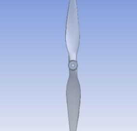
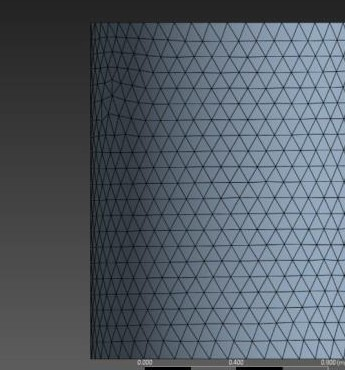
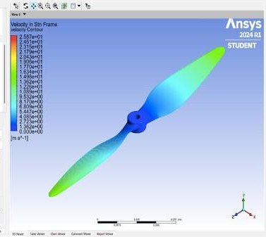
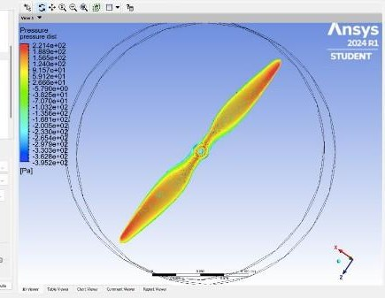
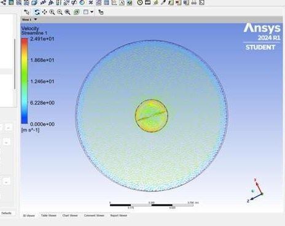
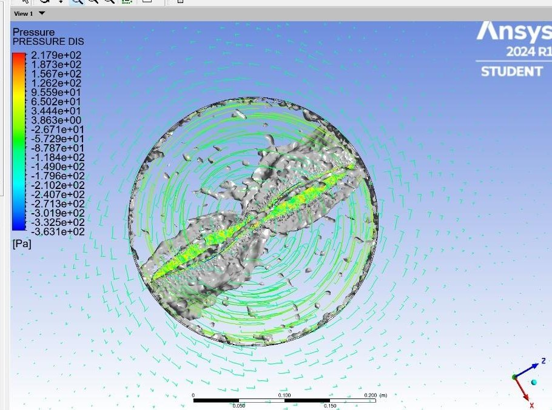
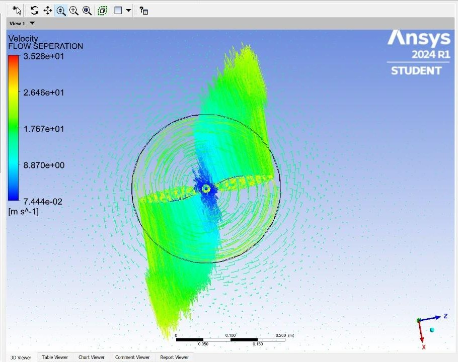

Rotating Machinery CFD | ANSYS Fluent Transient | Dual-Domain (MRF-style) Approach | UAV Propulsion

This project simulates the aerodynamic behaviour of a 10″ × 4.5″ two-blade UAV propeller (the widely-used "1045") in ANSYS Fluent, using a transient dual-domain approach: a small rotating cylinder wrapping the blade is nested inside a larger stationary domain, coupled through a sliding mesh interface. The blade rotates at 1100 RPM in still air.
The study covers the full CFD workflow — geometry preparation, dual-domain sketching, unstructured tetrahedral meshing with local refinement around the blade, k–ω turbulence closure, time-step derivation from the blade-passage period, and post-processing of velocity, pressure, streamlines, vortex cores and separation regions. Results give a clear qualitative picture of the flow around the blade: tip-loaded velocity distribution, leading-edge / trailing-edge pressure differential driving thrust, and coherent tip-vortex structures shed into the wake.
Characterise the aerodynamic performance of a 1045 two-blade propeller rotating at 1100 RPM in still atmospheric air, and produce the flow-field visualisations needed to reason about thrust generation and losses:

Twist distribution is visible from tip to hub. The blade is imported from GrabCAD and cleaned up in SpaceClaim before enclosure sketching.
The case uses two nested fluid enclosures coupled through a sliding interface — the standard approach for rotating machinery in Fluent:
The blade itself is subtracted from the rotating enclosure with a Boolean operation, leaving only the fluid volume with the blade as an internal wall. The two enclosures share a contact region set as an interface so information passes between them each timestep. This separation is what lets the mesh follow the blade rotation locally without having to spin the entire flow domain.
Unstructured tetrahedral (Tet4) meshing was used throughout. Local sizing was set independently in each enclosure to keep the total cell count manageable while preserving accuracy near the blade:

Static enclosure at 0.08 m sizing — coarse enough to keep the cell count down where the flow is nearly uniform.
Rotating enclosure at 0.005 m sizing — 16× finer than the far field, needed to resolve the blade boundary layer and tip flow.
For a rotating case, the timestep is driven by the blade-passage period rather than by any freestream scale. At 1100 RPM the angular velocity in degrees per second is:
ω = 1100 × 360 / 60 = 6600 °/s
For a two-bladed propeller (N = 2) the blade-passage period — the time for one blade to arrive at the position the previous blade just left — is:
T = 360° / (N · ω) = 360 / (2 × 6600) ≈ 0.0272 s
Splitting each blade passage into 20 sub-steps gives the timestep actually used in the simulation:
Δt = T / 20 ≈ 1.36 × 10⁻³ s
A max of 150 inner iterations per timestep was allowed, which is generous but keeps the inner residuals well below tolerance for this mesh size.

Peak velocity reaches ~25.9 m/s at the blade tips, decaying almost linearly toward the hub (near zero at the shaft) — the classic radial velocity distribution of a rotating blade, ω × r. The tip-loaded profile is what makes most of the thrust; the hub region contributes little and mostly generates drag.

Pressure spans roughly −395 Pa to +221 Pa across the blade. High-pressure regions (yellow/red) sit on the leading edge and pressure side, low-pressure regions (blue) on the suction side and near the trailing edge. It's this front-to-back Δp integrated over the blade area that produces the thrust force in the axial direction.

Front-view streamlines show the swirl imparted to the flow by the blade rotation. The near-blade region shows the fastest, most organised flow; further out the flow settles back toward the freestream. The circular symmetry is a good qualitative sanity check on the rotating-domain setup.

Iso-surfaces of swirling strength (actual value ≈ 59.6 s⁻¹) reveal two counter-rotating tip vortices trailing off the blade tips — the dominant source of induced drag on any rotor. The coloured surfaces show the pressure field on the same view: low pressure inside the vortex cores, higher pressure outside. Vortex-core capture at this level of detail is the main reason the near-blade mesh has to be fine.

Vector projection at the blade wall highlights where the boundary layer detaches from the surface — a persistent narrow band along the trailing edge on the suction side. Separation here is expected at this rotational speed and blade loading; minimising it would be the first optimisation target for a redesign.
Study scope — honest note
This case establishes the methodology and produces qualitative flow visualisations. A thrust-force report was defined on the propeller wall and residuals were monitored, but converged numerical values for thrust and torque were not recorded in the deliverable. A natural next step is a mesh-independence study across two or three refinement levels and a validation of the thrust value against manufacturer / experimental data for the 1045 at 1100 RPM.
The simulation captures the aerodynamic signature of the 1045 propeller cleanly: radial velocity buildup from hub to tip, leading-edge pressure loading that drives thrust, coherent tip vortices in the wake, and a narrow trailing-edge separation band on the suction side. The dual-domain / sliding-interface setup is the correct approach for this class of problem, and the time-step choice (20 sub-steps per blade passage) is well-matched to a k–ω transient run.
As a portfolio piece the project demonstrates fluency with the full rotating-machinery workflow in ANSYS Fluent — enclosure sketching, Boolean subtraction, mesh sizing per zone, sliding interface, mesh motion, transient time-step derivation, monitor definition, and multi-view post-processing — on a physically meaningful UAV component.
✓ Project Outcomes